何枚でも置ける Playtest収録
背景・タイル・表示の仕方をウィジェットごとに変えられます。
トレイ →「ウィジェットを追加」
動画や静止画を背景にできる、デスクトップのランチャー。
よく使うアプリやサイトをタイルに並べて、1 クリックで開けます。音量や再生中の曲、OBS の操作もタイルにできます。
Windows 向け・Steam で配布。発売日は未定です。
30 秒のデモ動画
「→」は、その機能がある場所です。各機能の横のラベルは、現在の体験版(Playtest)に入っているかどうかです。写真のアプリ名・アイコン・曲名・機器名は撮影用の架空のものです。
デスクトップに置く小さな窓です。
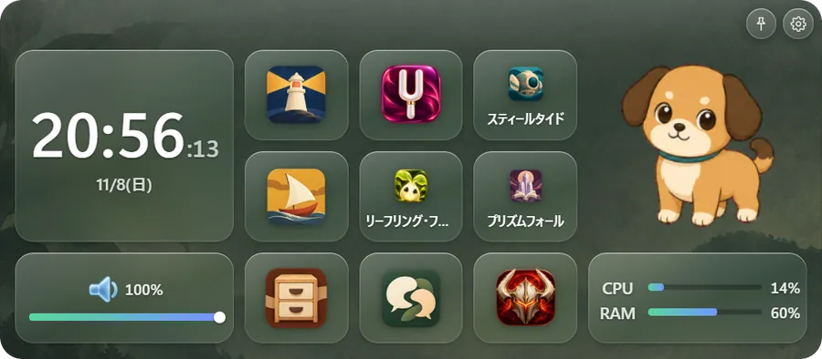
背景・タイル・表示の仕方をウィジェットごとに変えられます。
トレイ →「ウィジェットを追加」
タイルの追加・並べ替えと、ウィジェットの移動・大きさ変更。
右クリック →「編集モード」
いつも手前に出ます。右上のピンで外せます。
モニターを外しても、戻せば元の位置に戻ります。
ウィジェットをいつ見せるかを選べます。
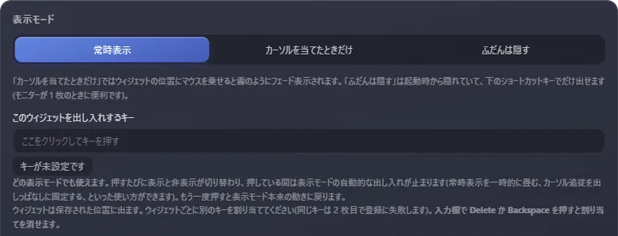
常時表示 / カーソルを当てたときだけ / ふだんは隠す。隠れている間は動画を止めます。
設定 →「表示モード」
押すたびに表示と非表示が切り替わります。
現れる速さや、隠れたときにうっすら残すかを調整できます。
すりガラスの質感をウィジェットごとに変えられます。下は「おまかせ」の 4 種類です。
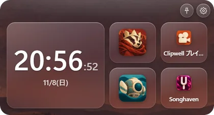
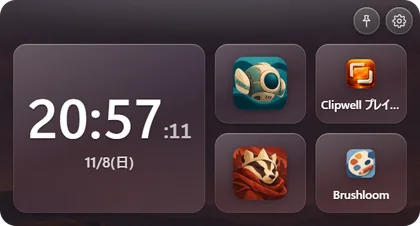
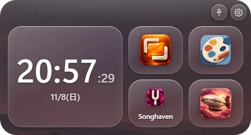
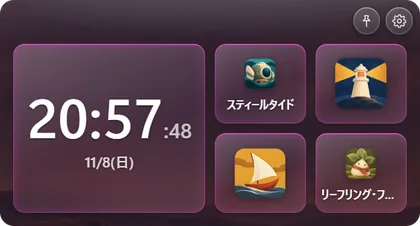
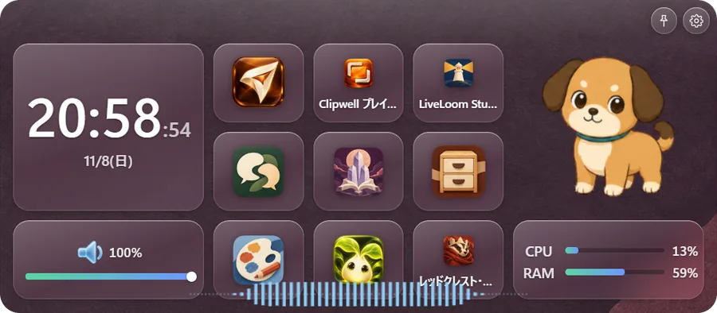
ぼかし・色味・角の丸み・縁の光・アクセント色を調整できます。
設定 →「表示モード」→「ガラスの見た目」
鳴っている音に合わせて、ウィジェットの端に波形を描きます。色・高さ・置く場所を変えられます。
設定 →「表示モード」→「ガラスの見た目」
気に入った見た目は名前を付けて保存し、ほかのウィジェットでも使えます。
240 種類以上のアイコン、絵文字、手持ちの画像から選べます。
タイル 1 枚ずつ、背景の色と透明度を変えられます。
動画や画像をウィジェットの背景にします。
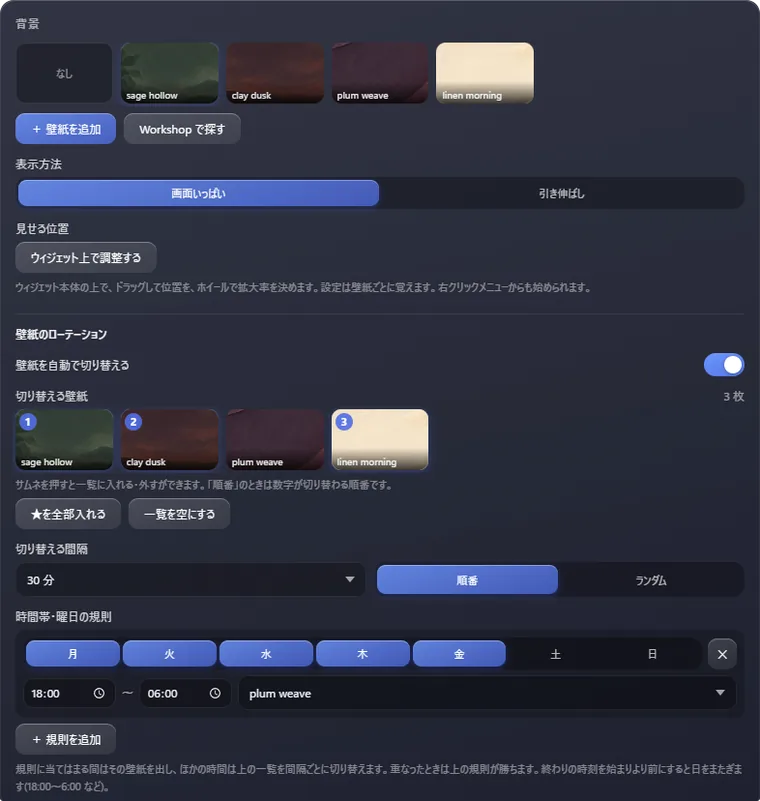
mp4・webm・mov などの動画をループ再生します。画像も使えます。
設定 →「背景」→「＋ 壁紙を追加」
ウィジェットの上で、ドラッグで位置、ホイールで拡大率を決めます。
右クリック →「背景の位置を調整...」
時間帯や曜日、一定の間隔で背景を入れ替えます。順番・ランダムを選べます。
設定 →「背景」→「壁紙のローテーション」
押したときに何をするかを、12 種類から選びます。
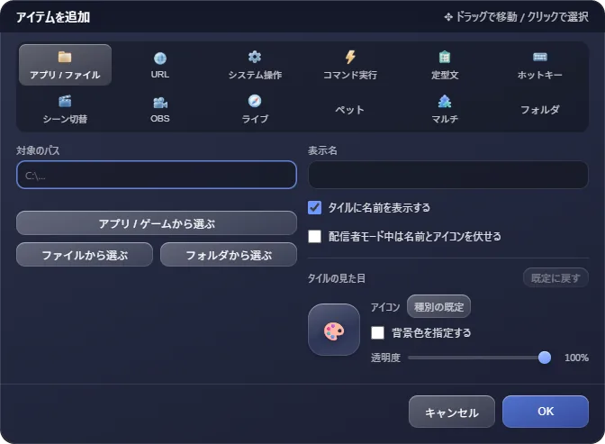
| アプリ / ファイル Playtest収録 | アプリ・ゲーム・フォルダを開く。起動中なら最小化 / 元に戻す |
|---|---|
| URL Playtest収録 | サイトを開く |
| システム操作 Playtest収録 | ミュート・音量・曲の再生や送り |
| コマンド実行 Playtest収録 | コマンドを実行する |
| 定型文 Playtest未収録 | 作業中のアプリへ文字を貼り付け / 打ち込む |
| ホットキー Playtest収録 | キー操作を送る |
| シーン切替 Playtest収録 | シーンを切り替える |
| OBS Playtest収録 | OBS を操作する |
| ライブ Playtest収録 | ライブタイルを置く |
| ペット Playtest収録 | ペットを置く |
| マルチ Playtest収録 | 複数の操作を順番に実行する |
| フォルダ Playtest未収録 | 中に別のタイルを入れておける。押すとパネルが開く |
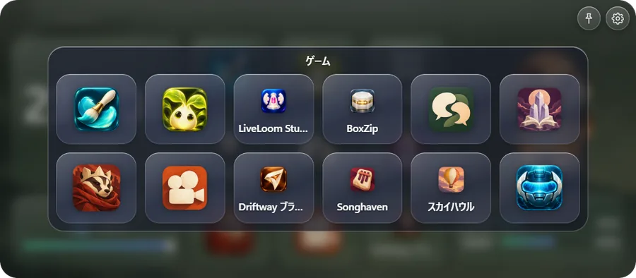
ファイルやフォルダをウィジェットへドラッグ&ドロップしても追加できます。
編集モード →「＋ アイテムを追加」
編集モードでドラッグ。ライブタイルとペットは 2 × 2 まで広げられます。
中身が動き続けるタイルです。大きさは 1 × 1 から 2 × 2 まで。
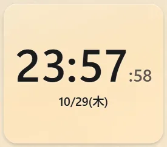
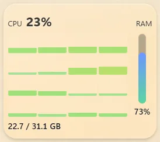
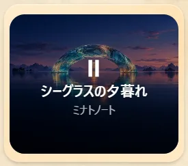
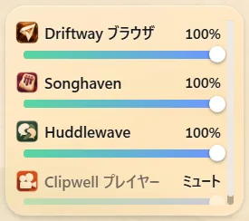
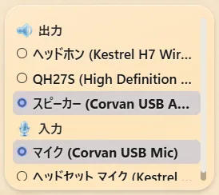
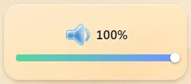
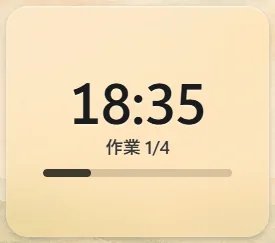
タイルの中でペットが動き、PC の様子に合わせて動きを変えます。
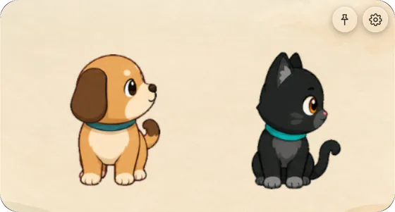
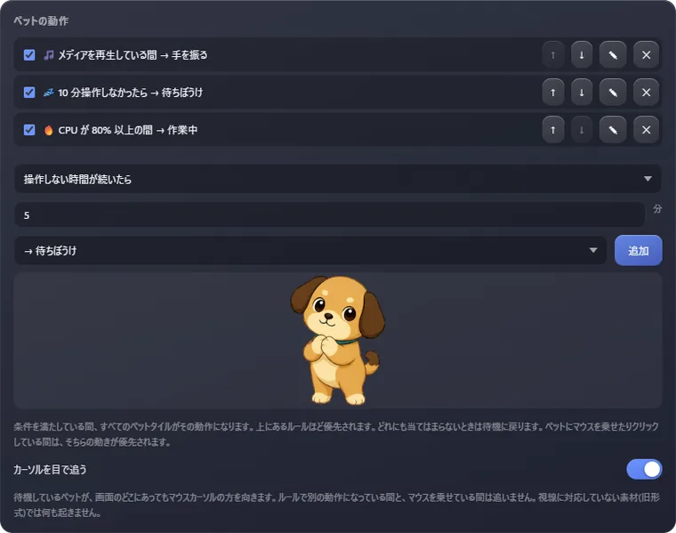
2 匹を同梱。マウスを乗せると反応します。
離席・再生中・CPU が高いとき・OBS で配信中に、動きを変えます。
設定 →「ペットの動作」
自分で用意した素材や、ワークショップの素材も使えます。
すべてのウィジェットをまるごと保存して、切り替えます。
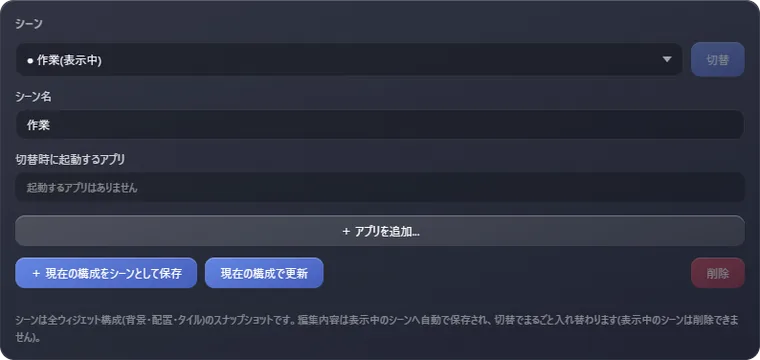
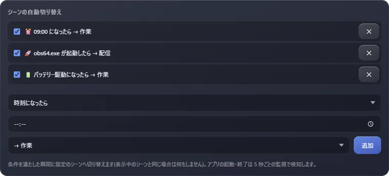
作業用・配信用・ゲーム用を使い分け。切り替えたときにアプリも起動できます。
設定 →「シーン」
時刻・アプリの起動や終了・電源の状態で切り替えます。
設定 →「シーンの自動切り替え」
キー 1 つで検索窓を開き、名前で探して実行します。
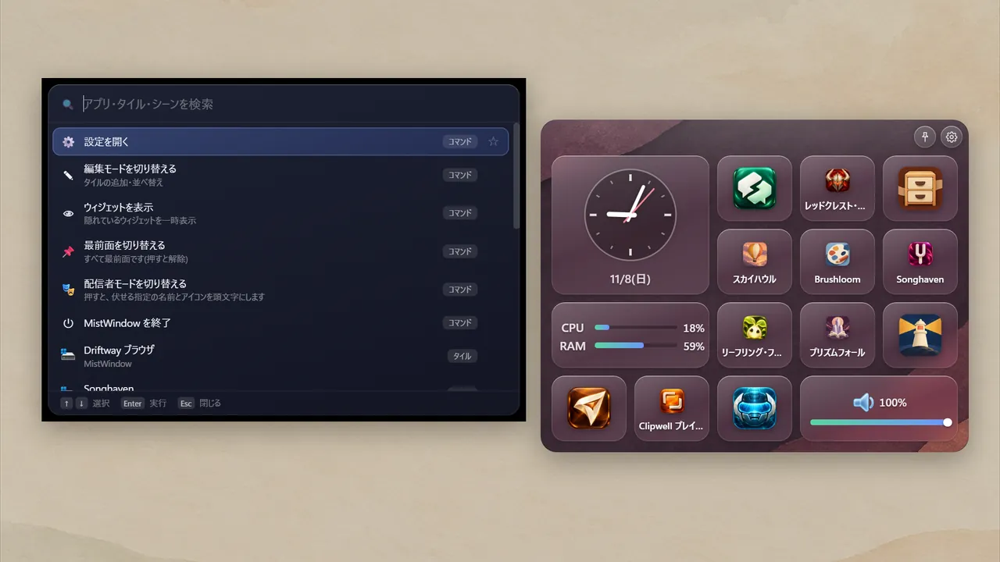
タイル・アプリ・ゲーム・シーンをまとめて探せます。よく使うものは ★ で先頭に。
Ctrl + Shift + Space(変更できます)
OBS Studio をタイルから操作します。
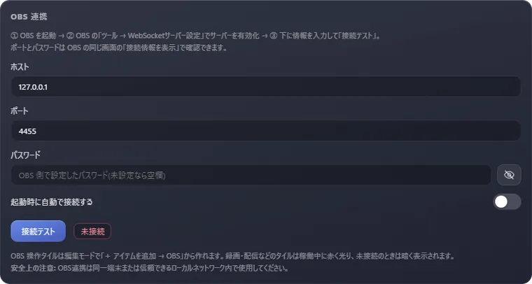
シーン切替・録画・配信・一時停止・リプレイ保存・仮想カメラ・ミュート。動作中は赤く光ります。
OBS の WebSocket サーバーにつなぎます。
設定 →「OBS 連携」
タイル名・ミキサーのアプリ名・曲名・ファイルの場所を隠します。OBS で配信中は自動で ON にできます。
トレイ / 右クリック →「配信者モード」
購読した素材がそのまま一覧に並びます。自分の素材もアプリから投稿できます。
設定 →「Steam Workshop」
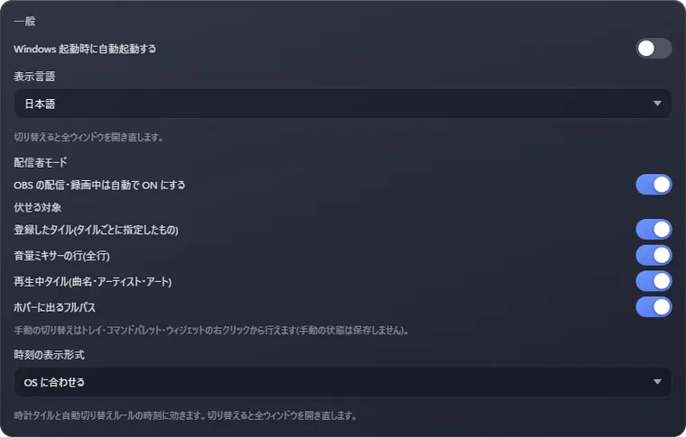
Windows と一緒に起動します。
日本語・English・简体中文・繁體中文・한국어・Русский。
12 時間 / 24 時間を選べます。
はじめて起動したときに使い方を案内します。
発売前の MistWindow を無料で試せます。
| 製品版 | 体験版 | |
|---|---|---|
| 上の機能 | すべて | 「Playtest収録」の付いた機能 |
| 設定 | 体験版と製品版で別に保存されます | |
開発中の機能です。時期は未定で、内容は変わることがあります。
アプリの中でタイルの見た目を作り、ワークショップで共有。